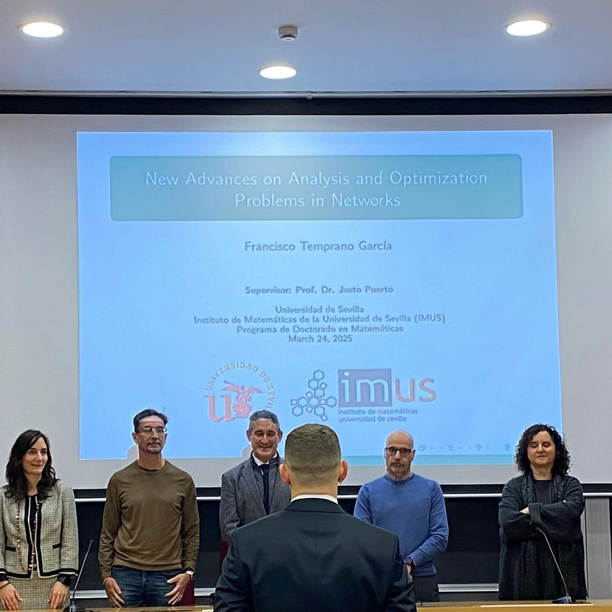

De nada, Francisco Temprano García
De nada porque sentarte conmigo aquel primer día de la clase, fue lo mejor que pudo pasarte.
De nada por toda la ayuda prestada cuando no había forma de sacar un ejercicio de álgebra, de ecuaciones diferenciales, de serie de funciones, de diseño de experimentos, de lo que fuese.
De nada porque cuando estabas solo en un lugar que no era tu casa, decidí abrirte mi mundo, mi ciudad, abrirte a mis amistades, a mi familia, haciéndote sentir en casa de nuevo.
De nada porque la suerte que pudo hacer que los dos empezásemos algo que, aunque no lo reconozcamos, siempre fue un sueño, llegar a ser Doctor en Matemáticas, esa suerte, se llamó como yo. Y aun hoy, cuando tienes problemas encontrando la solución, esa suerte, esa idea feliz, se sigue llamando como yo.
De nada porque de las infinitas conversaciones que hemos tenido en habitaciones de hoteles perdidos en Granada, Porto, Cádiz, Frankfurt, Gante,… hasta en un resort de esquí en Suiza, sin saber nosotros esquiar. De todas ellas, has aprendido a replantearte tus principios mil veces, a mirar todo siempre desde otro ángulo, desde la cara B.
De nada porque cuando el vacío psicológico en el que estabas hundido te arrastraba cada vez más a un pozo sin fondo, ese que apenas te dejaba respirar, estuve siempre ahí. De nada porque cuando algún amigo se fue, cuando alguna novia se fue, cuando alguna abuela se fue, estuve ahí contigo hasta las 5 de la mañana, calmando las aguas, sacándote a respirar, haciéndote ver otro horizonte, otro mejor.
De nada porque te he abierto un mundo artístico, cultural, estético, y sobre todo musical, que era totalmente desconocido para ti. Chaval, ¡me las sé todas! De nada porque de las mejores batallas que tienes para contar, de una u otra forma, son gracias a mí. De nada porque, gracias a mí, ir a clase, al despacho, siempre fue un lujo, un día más, nunca uno menos. Y sí, todo eso, desde el asiento contiguo de la clase, desde la mesa de en frentre del despacho.
Un momento, esta maldita pluma… es todo al revés… todo eso es lo que has hecho por mi.
Gracias por todo,
Dr. Temprano García

>> Home